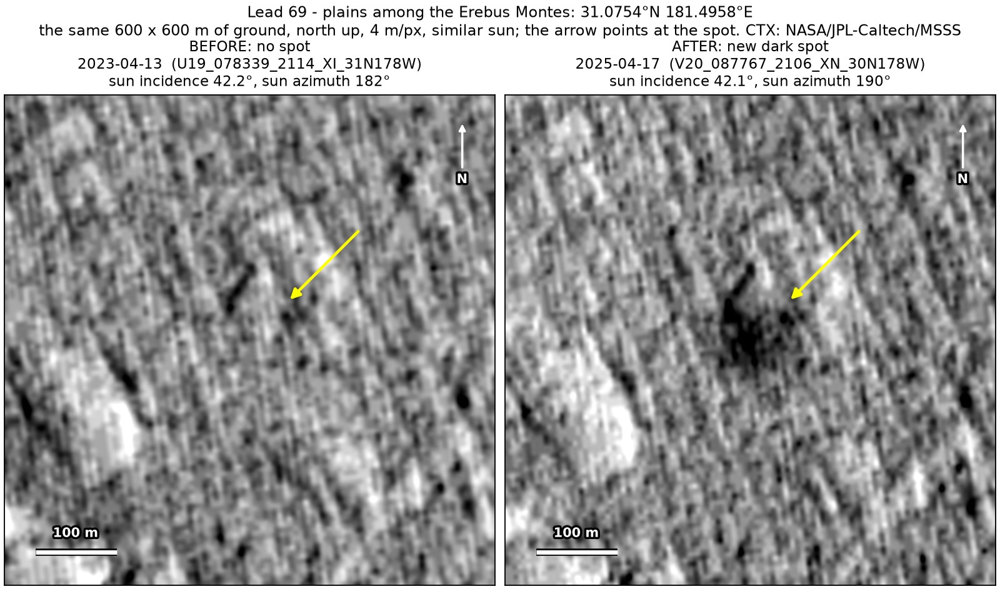
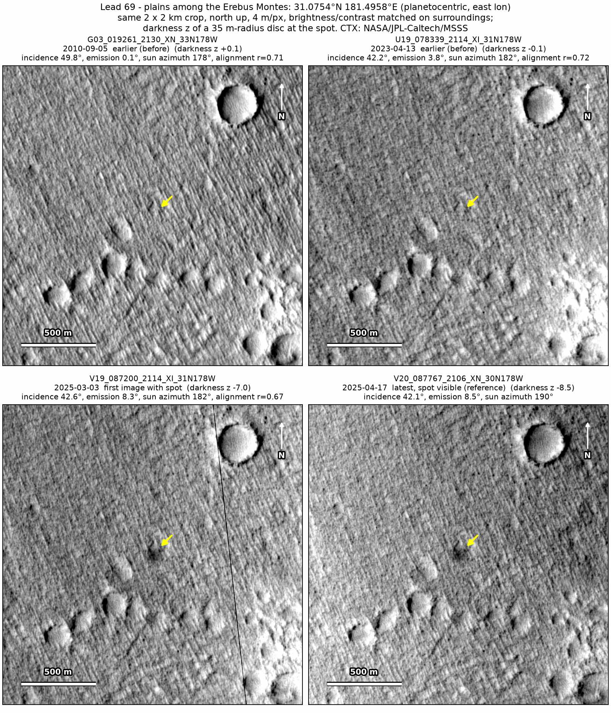
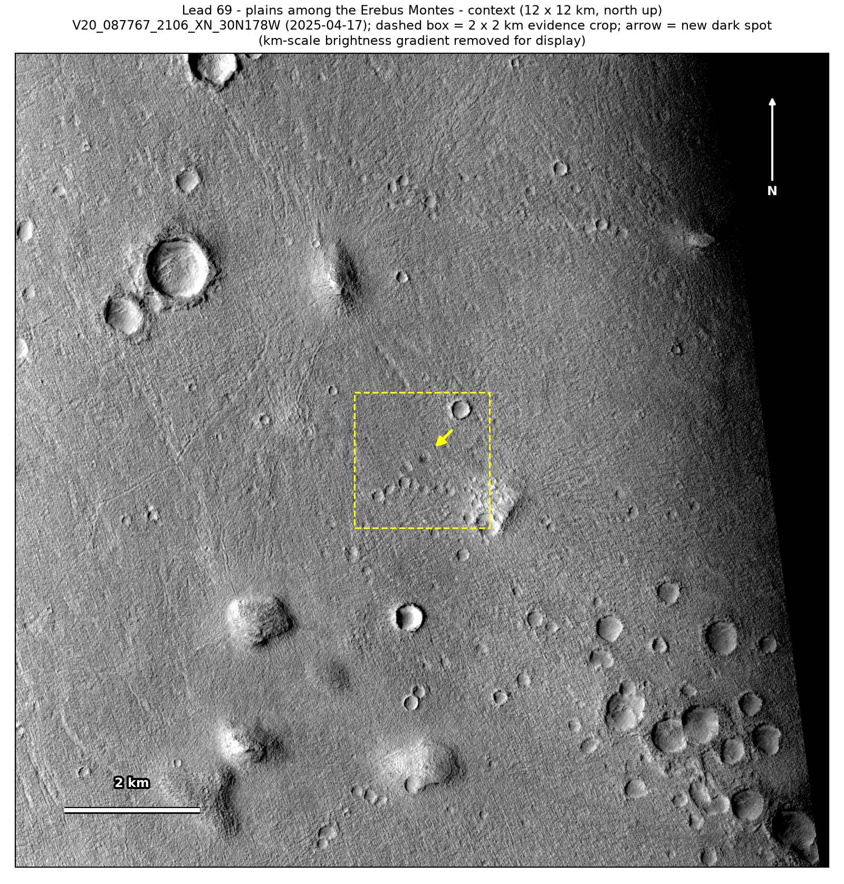
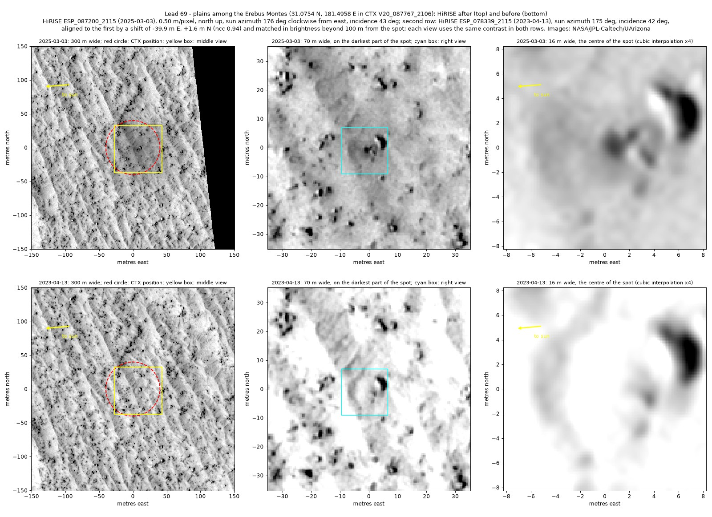
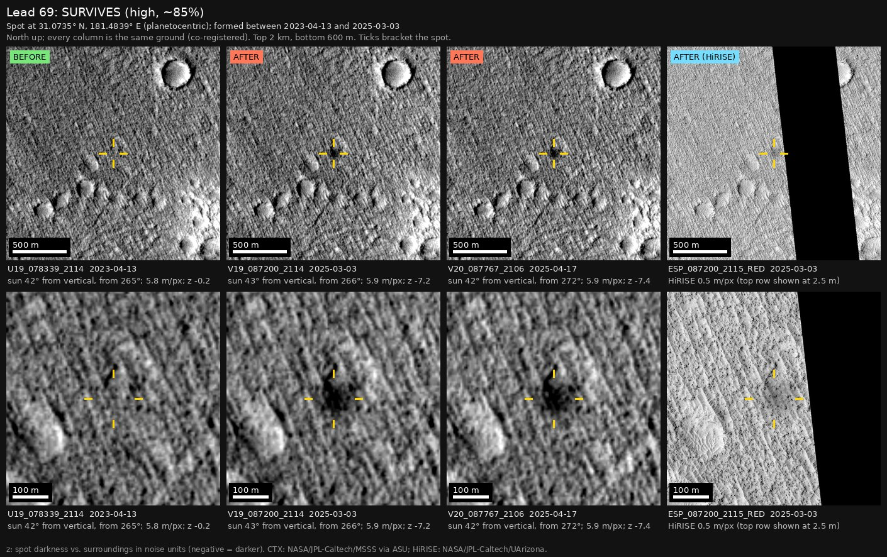
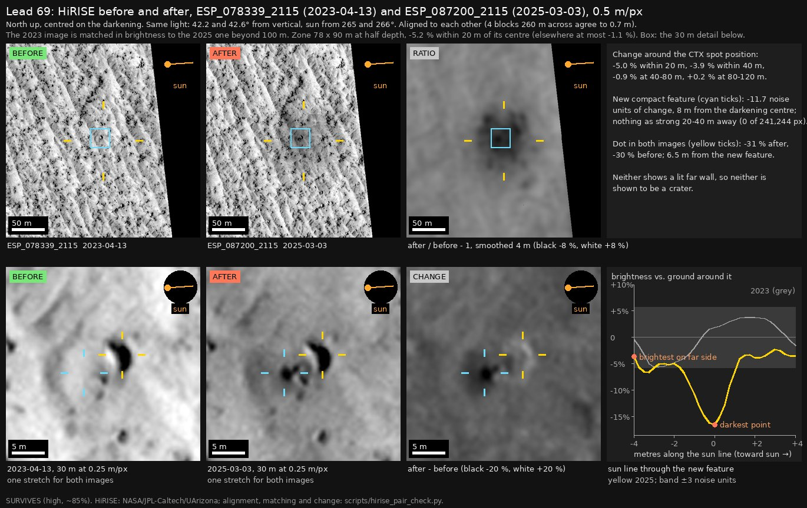

Professor of Mathematics
Paata Ivanisvili
Department of Mathematics, University of California, Irvine

← Possible new impact sites on Mars
Candidate 69: Plains among the Erebus Montes
Strong · roughly 90%

What changed. A diffuse dark spot about 70 m across appeared on the plains among the Erebus Montes between April 2023 and March 2025, and shows in two CTX images from two orbits. Much sharper images from the HiRISE camera show a new pit about 2 m across at its centre.
Why it may be a new impact. The two earlier CTX images, from 2010 and April 2023, show nothing there, although a dark mark 280 m to the west-south-west shows in both; the 2023 image was taken under the same sun as the March and April 2025 images. A dust devil or wind could darken the ground but would not make a new pit at its centre, and darkened ground around a small new pit is what a fresh impact would leave.
- Location
- 31.075° N, 181.496° E (178.504° W)
- Absent
- 5 September 2010 and 13 April 2023 (CTX and HiRISE)
- Present
- 3 March 2025 (CTX and HiRISE) and 17 April 2025
- Size
- Diffuse dark spot about 70 m across (74 × 130 m in CTX, 72 × 90 m in HiRISE) around a pit about 2 m across
- Confidence
- Strong candidate: roughly 90% likely to be a new impact.
- Caveat
- By chance, NASA’s high-resolution HiRISE camera photographed the site on 13 April 2023, before the spot formed, and on 3 March 2025, after it formed, on the same orbits as two of the CTX images. In the 2025 image the ground within 40 m of the spot is 11% darker than in 2023, and at its darkest point is a new feature about 2 m across, dark on its west side and bright on its east side under a western sun, as a small pit would be, while a boulder 5 m to the north-east shows in both images. The spot has been followed for only 45 days in CTX images, and the pit shows in only one HiRISE image. Dust removed by a dust devil or wind could account for the diffuse darkening, though not for the pit. Like every candidate here, it is unconfirmed: see the caveat.




